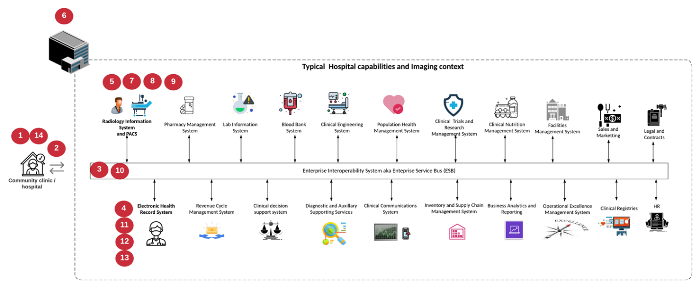

架构
提供者
FlexPod 架构旨在在整个计算，网络和存储堆栈中的组件或链路发生故障时提供高可用性。多个用于客户端访问和存储访问的网络路径可实现负载平衡并优化资源利用率。
下图显示了用于医疗成像系统解决方案部署的 16 Gb FC/40 Gb 以太网（ 40GbE ）拓扑结构。

存储架构
使用本节中的存储架构准则为企业级医疗映像系统配置存储基础架构。
存储层
典型的企业级医疗成像环境由多个不同的存储层组成。每个层都有特定的性能和存储协议要求。NetApp 存储支持各种 RAID 技术；有关详细信息，请参见 "此处"。以下是 NetApp AFF 存储系统如何满足映像系统不同存储层的需求：
-
* 性能存储（第 1 层）。 * 此层可为数据库，操作系统驱动器， VMware 虚拟机文件系统（ VMFS ）数据存储库等提供高性能和高冗余。根据 ONTAP 中的配置，块 I/O 会通过光纤移动到 SSD 的共享存储阵列。最小延迟为 1 毫秒到 3 毫秒，偶尔峰值为 5 毫秒。此存储层通常用于短期存储缓存，通常用于 6 到 12 个月的映像存储，以便快速访问联机的 Dicom 映像。此层可为映像缓存，数据库备份等提供高性能和高冗余。NetApp 全闪存阵列可在持续带宽下提供低于 1 毫秒的延迟，远远低于典型企业级医疗成像环境所需的服务时间。NetApp ONTAP 既支持 RAID-TEC （三重奇偶校验 RAID ，用于承受三个磁盘故障），也支持 RAID DP （双奇偶校验 RAID ，用于承受两个磁盘故障）。
-
* 归档存储（第 2 层）。 * 此层用于典型的成本优化文件访问，较大卷的 RAID 5 或 RAID 6 存储以及长期低成本 / 性能归档。NetApp ONTAP 既支持 RAID-TEC （三重奇偶校验 RAID ，用于承受三个磁盘故障），也支持 RAID DP （双奇偶校验 RAID ，用于承受两个磁盘故障）。FlexPod 中的 NetApp FAS 支持通过 NFS/SMB 将应用程序 I/O 映像到 SAS 磁盘阵列。NetApp FAS 系统可在持续带宽下提供 ~10 毫秒的延迟，远远低于企业级医疗成像系统环境中存储层 2 的预期服务时间。
在混合云环境中，基于云的归档可用于使用 S3 或类似协议归档到公有云存储提供商。通过 NetApp SnapMirror 技术，可以将映像数据从全闪存或 FAS 阵列复制到基于磁盘的速度较慢的存储阵列或 Cloud Volumes ONTAP for AWS ， Azure 或 Google Cloud 。
NetApp SnapMirror 可提供行业领先的数据复制功能，通过统一数据复制帮助保护您的医疗映像系统。通过跨平台复制（从闪存到磁盘再到云）简化整个数据网络结构的数据保护管理：
-
在 NetApp 存储系统之间无缝高效地传输数据，以使用相同的目标卷和 I/O 流支持备份和灾难恢复。
-
故障转移到任何二级卷。从二级存储上的任何时间点 Snapshot 进行恢复。
-
利用零数据丢失同步复制（ RPO=0 ）保护最关键的工作负载。
-
减少网络流量。通过高效运营减少存储占用空间。
-
仅传输更改的数据块，以减少网络流量。
-
在传输期间，保持主存储的存储效率优势，包括重复数据删除，数据压缩和数据缩减。
-
利用网络压缩提高实时效率。
有关详细信息，请参见 "此处"。
下表列出了典型医疗成像系统在特定延迟和吞吐量性能特征方面所需的每一层。
| 存储层 | 要求 | NetApp 建议 |
|---|---|---|
1. |
延迟 1 – 5 毫秒 35 – 500 Mbps 吞吐量 |
延迟小于 1 毫秒的 AFF 具有两个磁盘架的 AFF A300 高可用性（ HA ）对，可处理高达 ~1.6 GBps 的吞吐量 |
2. |
内部归档 |
FAS ，延迟长达 30 毫秒 |
归档到云 |
SnapMirror 复制到 Cloud Volumes ONTAP 或使用 NetApp StorageGRID 软件进行备份归档 |
存储网络连接
FC 网络结构
-
FC 网络结构用于从计算到存储的主机操作系统 I/O 。
-
两个 FC 网络结构（阵列 A 和阵列 B ）分别连接到 Cisco UCS 阵列 A 和 UCS 阵列 B 。
-
每个控制器节点上都有一个具有两个 FC 逻辑接口（ LIF ）的 Storage Virtual Machine （ SVM ）。在每个节点上，一个 LIF 连接到阵列 A ，另一个 LIF 连接到阵列 B
-
16 Gbps FC 端到端连接通过 Cisco MDS 交换机实现。一个启动程序，多个目标端口和分区均已配置。
-
FC SAN 启动用于创建完全无状态计算。服务器从 AFF 存储集群上托管的启动卷中的 LUN 启动。
用于通过 iSCSI ， NFS 和 SMB/CIFS 进行存储访问的 IP 网络
-
每个控制器节点上的 SVM 中有两个 iSCSI LIF 。在每个节点上，一个 LIF 连接到阵列 A ，另一个 LIF 连接到阵列 B
-
每个控制器节点上的 SVM 中有两个 NAS 数据 LIF 。在每个节点上，一个 LIF 连接到阵列 A ，另一个 LIF 连接到阵列 B
-
存储端口接口组（虚拟端口通道 vPC ），用于连接到交换机 N9kA 的 10 Gbps 链路和连接到交换机 N9k-B 的 10 Gbps 链路
-
从 VM 到存储的 ext4 或 NTFS 文件系统中的工作负载：
-
基于 IP 的 iSCSI 协议。
-
-
NFS 数据存储库中托管的 VM ：
-
VM OS I/O 通过 Nexus 交换机通过多个以太网路径。
-
带内管理（主动 - 被动绑定）
-
连接到管理交换机 N9kA 的 1 Gbps 链路，连接到管理交换机 N9k-B 的 1 Gbps 链路
备份和恢复
FlexPod 数据中心基于由 NetApp ONTAP 数据管理软件管理的存储阵列构建。ONTAP 软件经过 20 多年的发展，为 VM ， Oracle 数据库， SMB/CIFS 文件共享和 NFS 提供了许多数据管理功能。它还提供保护技术，例如 NetApp Snapshot 技术， SnapMirror 技术和 NetApp FlexClone 数据复制技术。NetApp SnapCenter 软件具有一个服务器和一个 GUI 客户端，可用于对 VM ， SMB/CIFS 文件共享， NFS 以及 Oracle 数据库备份和恢复使用 ONTAP Snapshot ， SnapRestore 和 FlexClone 功能。
NetApp SnapCenter 软件采用 "获得专利" Snapshot 技术，用于在 NetApp 存储卷上瞬时创建整个 VM 或 Oracle 数据库的备份。与 Oracle Recovery Manager （ RMAN ）相比， Snapshot 副本不需要完整的基线备份副本，因为它们不会存储为块的物理副本。创建 Snapshot 副本时， Snapshot 副本会作为指向 ONTAP WAFL 文件系统中存储块的指针进行存储。由于这种紧密的物理关系， Snapshot 副本会与原始数据保持在同一存储阵列上。您还可以在文件级别创建 Snapshot 副本，以便更精细地控制备份。
Snapshot 技术基于写入时重定向技术。它最初仅包含元数据指针，在首次将数据更改为存储块之前不会占用太多空间。如果现有块由 Snapshot 副本锁定，则 ONTAP WAFL 文件系统会将新块作为活动副本写入。这种方法可避免写入时更改技术发生的双写入。
对于 Oracle 数据库备份， Snapshot 副本可节省大量时间。例如，单独使用 RMAN 需要 26 小时才能完成的备份可能需要不到 2 分钟才能使用 SnapCenter 软件完成。
由于数据还原不会复制任何数据块，而是会在创建 Snapshot 副本时将指针翻转到应用程序一致的 Snapshot 块映像，因此 Snapshot 备份副本几乎可以瞬时还原。SnapCenter 克隆会为现有 Snapshot 副本创建一个单独的元数据指针副本，并将新副本挂载到目标主机。此过程速度快，存储效率高。
下表总结了 Oracle RMAN 与 NetApp SnapCenter 软件之间的主要区别。
| 备份 | 还原 | 克隆 | 需要完整备份 | 空间使用量 | 异地副本 | |
|---|---|---|---|---|---|---|
RMAN |
速度较慢 |
速度较慢 |
速度较慢 |
是的。 |
高 |
是的。 |
SnapCenter |
快速 |
快速 |
快速 |
否 |
低 |
是的。 |
下图显示了 SnapCenter 架构。

全球数千家企业都在使用 NetApp MetroCluster 配置在数据中心内外实现高可用性（ HA ），零数据丢失和无中断运行。MetroCluster 是 ONTAP 软件的一项免费功能，用于在位于不同位置或故障域的两个 ONTAP 集群之间同步镜像数据和配置。MetroCluster 通过自动处理两个目标为应用程序提供持续可用的存储：零恢复点目标（ RPO ），通过同步镜像写入集群的数据。通过镜像配置和自动访问第二个站点的数据实现接近零恢复时间目标（ RTO ） MetroCluster 可在两个站点的两个独立集群之间自动镜像数据和配置，从而简化操作。由于存储是在一个集群中配置的，因此它会自动镜像到第二个站点的第二个集群。NetApp SyncMirror 技术可为所有数据提供一个完整副本，并且 RPO 为零。因此，一个站点的工作负载可以随时切换到另一个站点，并继续提供数据而不会丢失数据。有关详细信息，请参见 "此处"。
网络
一对 Cisco Nexus 交换机可为从计算到存储的 IP 流量以及医学影像系统图像查看器的外部客户端提供冗余路径：
-
使用端口通道和 vPC 的链路聚合可在整个系统中使用，从而实现更高带宽和高可用性的设计：
-
VPC 用于 NetApp 存储阵列和 Cisco Nexus 交换机之间。
-
VPC 用于 Cisco UCS 互联阵列和 Cisco Nexus 交换机之间。
-
每台服务器都具有虚拟网络接口卡（ Virtual Network Interface Card ， vNIC ），可通过冗余连接到统一网络结构。在互联阵列之间使用 NIC 故障转移来实现冗余。
-
每个服务器都具有虚拟主机总线适配器（ vHBA ），并与统一网络结构建立冗余连接。
-
-
Cisco UCS 互联阵列会按照建议配置在终端主机模式下，以便将 vNIC 动态固定到上行链路交换机。
-
FC 存储网络由一对 Cisco MDS 交换机提供。
计算— Cisco Unified Computing System
通过不同互联阵列连接的两个 Cisco UCS 网络结构提供两个故障域。每个网络结构都连接到两个 IP 网络交换机和不同的 FC 网络交换机。
为了运行 VMware ESXi ，系统会根据 FlexPod 最佳实践为每个 Cisco UCS 刀片式服务器创建相同的服务配置文件。每个服务配置文件应包含以下组件：
-
两个 vNIC （每个网络结构上一个），用于传输 NFS ， SMB/CIFS 以及客户端或管理流量
-
为 vNIC 提供所需的其他 VLAN ，以传输 NFS ， SMB/CIFS 和客户端或管理流量
-
两个 vNIC （每个网络结构上一个），用于传输 iSCSI 流量
-
两个存储 FC HBA （每个网络结构上一个），用于向存储传输 FC 流量
-
SAN 启动
虚拟化
VMware ESXi 主机集群运行工作负载 VM 。集群包含在 Cisco UCS 刀片式服务器上运行的 ESXi 实例。
每个 ESXi 主机都包含以下网络组件：
-
通过 FC 或 iSCSI 启动 SAN
-
NetApp 存储上的启动 LUN （位于用于启动操作系统的专用 FlexVol 中）
-
两个 vmnic （ Cisco UCS vNIC ），用于 NFS ， SMB/CIFS 或管理流量
-
两个存储 HBA （ Cisco UCS FC vHBA ），用于传输到存储的 FC 流量
-
标准交换机或分布式虚拟交换机（根据需要）
-
工作负载 VM 的 NFS 数据存储库
-
虚拟机的管理，客户端流量网络和存储网络端口组
-
用于管理，客户端流量和存储访问（ NFS ， iSCSI 或 SMB/CIFS ）的网络适配器
-
已启用 VMware DRS
-
为存储的 FC 或 iSCSI 路径启用了原生多路径
-
已关闭虚拟机的 VMware 快照
-
为 VMware 部署的 NetApp SnapCenter 用于 VM 备份
医疗成像系统架构
在医疗保健组织中，医疗成像系统是关键应用程序，可与从患者注册到收入周期计费相关活动的临床工作流完美集成。
下图显示了典型大型医院涉及的各种系统；此图旨在在我们放大典型医疗成像系统的架构组件之前为医疗成像系统提供架构环境。工作流千差万别，并且因医院和使用情形而异。
下图显示了患者，社区诊所和大型医院环境下的医疗成像系统。

-
患者前往社区诊所时出现症状。在咨询期间，社区医生会发出一个成像指令，该指令将以一条 HL7 顺序消息的形式发送到较大的医院。
-
社区医生的 EHR 系统会向大型医院发送 "HL7 Order/ORD" 消息。
-
企业互操作性系统（也称为企业服务总线（ Enterprise Service Bus ， ESB] ）处理订单消息并将订单消息发送到 EHR 系统。
-
EHR 将处理订单消息。如果不存在患者记录，则会创建新的患者记录。
-
EHR 会向医疗成像系统发送成像顺序。
-
患者致电大医院预约成像。
-
成像接收和注册台使用放射学信息或类似系统为患者安排成像预约。
-
患者到达后将进行成像预约，此时将创建图像或视频并将其发送到 PACS 。
-
放射科医生使用支持高端 /GPU 图形的诊断查看器在 PACS 中读取这些图像并为这些图像添加标注。某些映像系统在映像工作流中内置了人工智能（ AI ）效率提升功能。
-
图像顺序结果将通过 ESB-发送 到 EHR ，形式为 Order Results HL7 ORU 消息。
-
EHR 会将顺序结果处理到患者的记录中，并将缩略图放置在可识别上下文的链接中以指向实际的 Dicom 图像。如果需要从 EHR 中获取更高分辨率的图像，医生可以启动诊断查看器。
-
医生会查看该图像并将医生备注输入到患者记录中。医生可以使用临床决策支持系统来改进审核流程，并协助正确诊断患者。
-
然后， EHR 系统会将订单结果以订单结果消息的形式发送到社区医院。此时，如果社区医院可以接收完整的映像，则该映像将通过 WADO 或 Dicom 发送。
-
社区医生完成诊断，并为患者提供后续步骤。
典型的医疗成像系统使用 N 层架构。医疗成像系统的核心组件是一个用于托管各种应用程序组件的应用程序服务器。典型的应用程序服务器基于 Java 运行时或 C# .Net CLR- 。大多数企业级医疗成像解决方案都使用 Oracle 数据库服务器， MS SQL Server 或 Sybase 作为主数据库。此外，某些企业医疗成像系统还使用数据库在一个地理区域内加速和缓存内容。某些企业医疗成像系统还会将 MongoDB ， Redis 等 NoSQL 数据库与企业集成服务器结合使用，以便使用这些数据库作为 Dicom 接口和 / 或 API 。
典型的医疗成像系统可为两组不同的用户提供对图像的访问权限：诊断用户 / 放射科医生或订购该图像的临床医生。
放射科医生通常使用支持图形的高端诊断查看器，这些查看器运行在物理或虚拟桌面基础架构中的高端计算和图形工作站上。如果您即将开始虚拟桌面基础架构之旅，可以找到更多信息 "此处"。
当卡特里娜飓风毁坏了路易斯安那州两家主要教学医院时，各级领导者们聚集在一起，构建了一个弹性电子健康记录系统，在创纪录的时间内包含 3000 多个虚拟桌面。有关使用情形参考架构和 FlexPod 参考捆绑包的详细信息，请参见 "此处"。
临床医生主要通过两种方式访问图像：
-
* 基于 Web 的访问。 * EHR 系统通常使用此功能将 PACS 图像嵌入为上下文感知链接，以链接形式存储到患者的电子病历（ EMR ）中，并可链接到成像工作流，操作步骤工作流，进度注释工作流等。此外，还可以通过基于 Web 的链接通过患者门户访问患者的图像。基于 Web 的访问使用一种称为上下文感知链接的技术模式。上下文感知链接可以是直接指向 Dicom 介质的静态链接 /URI ，也可以是使用自定义宏动态生成的链接 /URI 。
-
* 厚客户端。 * 某些企业医疗系统还允许您使用基于厚客户端的方法来查看映像。您可以从患者 EMR 中启动厚客户端，也可以作为独立应用程序启动。
通过医学影像系统，可以访问一个由医生或加入 CIN 的医生参加的社区。典型的医疗成像系统包括一些组件，这些组件可以使您的医疗保健组织内外的其他医疗 IT 系统实现映像互操作性。社区医生可以通过基于 Web 的应用程序访问映像，也可以利用映像交换平台实现映像互操作性。映像交换平台通常使用 WADO 或 Dicom 作为底层映像交换协议。
医学影像系统还可以支持需要在课堂上使用 PACS 或影像系统的学术医疗中心。为了支持学术活动，典型的医疗成像系统可以在占用空间较小的情况下拥有 PACS 系统的功能，也可以在仅供教学使用的成像环境中提供此功能。典型的供应商中立归档系统和一些企业级医疗成像系统提供了 "DICOM" 图像标记形态功能，可对用于教学目的的图像进行匿名化处理。标签形态使医疗保健组织能够以供应商中立的方式在不同供应商的医疗影像系统之间交换 Dicom 图像。此外，标记形态化还可以使医疗成像系统在企业范围内对医疗影像实施供应商中立的归档功能。
医疗成像系统正在开始使用 "基于 GPU 的计算功能" 通过预处理图像来增强人类工作流，从而提高效率。典型的企业级医疗成像系统可利用行业领先的 NetApp 存储效率功能。企业级医疗成像系统通常使用 RMAN 执行备份，恢复和还原活动。为了提高性能并缩短创建备份所需的时间，可以使用 Snapshot 技术进行备份操作，并使用 SnapMirror 技术进行复制。
下图显示了分层架构视图中的逻辑应用程序组件。

下图显示了物理应用程序组件。

逻辑应用程序组件要求基础架构支持多种协议和文件系统。NetApp ONTAP 软件支持一组行业领先的协议和文件系统。
下表列出了应用程序组件，存储协议和文件系统要求。
| 应用程序组件 | SAN/NAS | 文件系统类型 | 存储层 | 复制类型 |
|---|---|---|---|---|
VMware 主机产品数据库 |
本地 |
SAN |
VMFS |
第 1 层 |
应用程序 |
VMware 主机产品数据库 |
代表 |
SAN |
VMFS |
第 1 层 |
应用程序 |
VMware 主机 prod 应用程序 |
本地 |
SAN |
VMFS |
第 1 层 |
应用程序 |
VMware 主机 prod 应用程序 |
代表 |
SAN |
VMFS |
第 1 层 |
应用程序 |
核心数据库服务器 |
SAN |
ext4 |
第 1 层 |
应用程序 |
备份数据库服务器 |
SAN |
ext4 |
第 1 层 |
无 |
映像缓存服务器 |
NAS |
SMB/CIFS |
第 1 层 |
无 |
归档服务器 |
NAS |
SMB/CIFS |
第 2 层 |
应用程序 |
Web 服务器 |
NAS |
SMB/CIFS |
第 1 层 |
无 |
WADO 服务器 |
SAN |
NFS |
第 1 层 |
应用程序 |
业务智能服务器 |
SAN |
NTFS |
第 1 层 |
应用程序 |
业务智能备份 |
SAN |
NTFS |
第 1 层 |
应用程序 |
互操作性服务器 |
SAN |
ext4 |
第 1 层 |
应用程序 |
互操作性数据库服务器 |
 请求文档变更
请求文档变更 在 GitHub 上编辑
在 GitHub 上编辑 提供者指南
提供者指南